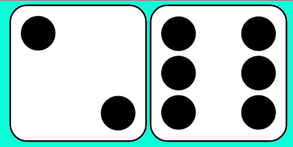
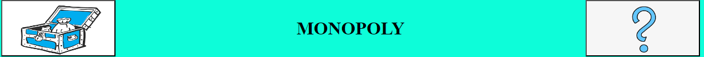
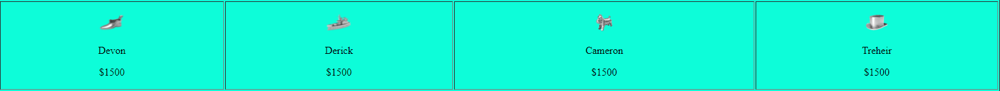
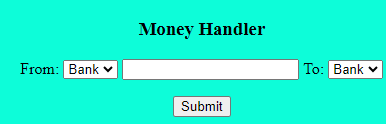
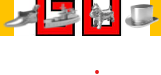
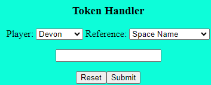
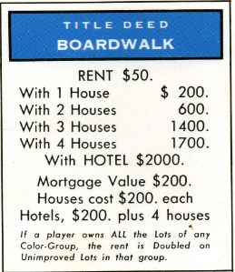
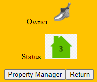

Home |
Guide |
Game
Guide to Monopoly!
Dice Rolls

Dice rolls decide the amount of spaces players will move their token. Each player rolls the dice at least once per turn, so you will be using these a lot.
- If the dice are not present on the screen, use the "Toggle Handlers" button to retrieve them.
- While they are on screen, you can roll the dice using the "Roll Dice" button.
- Also, if you want to play with the speed die, use the "Speed Die" button to make it appear and disappear when desired.
Chance / Community Chest

These cards represent random events that impact players in the game. There are both good ones and bad ones. When a player travels to one of these spaces, they pick up a card from the deck represented by the space. To do this, just click the image next to "Monopoly."
Money


Money is important for performing many transactions that occur in a Monopoly game and also represents the lifeline of a player.
- The amount of money players have will always be shown in the Stats Field, the first of the two images.
- If the Money Handler is not present on the screen, use the "Toggle Handlers" button to show it.
- Use the "From" and "To" fields to decide the players involved in the exchange.
- Enter a number in the middle field to decide the amount of money.
- Click "Submit" to perform the transaction.
Tokens


Tokens not only represent the players in the game but is also crucial to positioning in the map.
- If the Token Handler is not present on the screen, use the "Toggle Handlers" button to show it.
- Use the player field to decide which token to move.
- Use the reference field to decide either to move to a named space or move by a number of spaces.
- If moving by a number of spaces, enter a number in the third field.
- If moving to a named space, enter the name in the third field.
- Click "Submit" to move the token.
Properties


Properties make up the majority to the game's map. Players interact with these for various reasons, most involving money.
- Double-click a property's name to enter its handler.
- Use Property Manager to change its owner and status.
- Click "Return" to exit the handler.
- Use "Toggle Info" to reveal owners and statuses for all properties.
"Saving" the Game
Monopoly is known to take a lot of time to play so players may not have enough to complete it in one sitting. Players either come up a way to decide the winner of a game cut short or just continue the game later. This is for the second option.
- Use "Toggle Info" to reveal owners and statuses for all properties.
- Take a screenshot of the webpage.
- Save the image to a reliable location.
- Use "Toggle Info" again to reveal the tokens' location.
- Save the image to the same location.
The two images will contain essential information to help players set up the game to continue from previous gameplay.